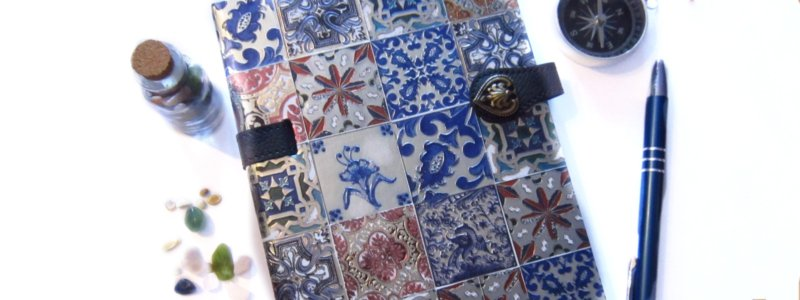

11 неща, които да правите през първите си дни на работа
Веднага след започване на нова работа, може би още не сте достатъчно въведени в дейността на фирмата и имате повечко незапълнено време.
Ето някои идеи за когато нямате какво да правите.
Разходете се до кухнята
Повечето офиси си имат дори и малка кухничка, където е най- подходящото място да си поприказвате с някого. Щом е в почивка, едва ли прекъсвате някаква спешна работа. Така че влезте, поздравете който е там, приближете се и обяснете, че сте нови и питайте каквото ви хрумне, например какво най им харесва в компанията. Ще се учидите колко приветливи и нестрашни могат да бъдат колегите. Вече имате още един човек, на който да разчитате, ако нещо не ви е ясно.
Научете се да се ориентирате в сградата
Сградите си имат скришни ниши. Ако сте смели, разходете се нагоре- надолу из етажите. Ако ли не- питайте колегите за тайното местенце, където може да останеш на спокойствие. Така може да се срещате там, а да опознаете офисите и заведенията, които са наоколо, може да ви е полезно, ако някой ви пита къде се намират. Огледайте се и за грамоти, награди и постери с информация за фирмата.
Прочетете си бележките
Ако вече сте минали някакво обучение, възможно е мозъкът ви да не се е справил с всички новости наведнъж. Нали си записвате всичко? Може даже да записвате имена и подробности за колеги.
Разгледайте бюрата на колегите
Снимките, джунджуриите и другото издава характера, така че може да опознаете хората като разгледате бюрата им. Освен това някой по- интересен предмет може да ви даде повод за разговор. Така бихте се сближили. Поканете ги на обяд или сутрин на кафе в близкото кафене.
Сега е времето да се запознаете с възможно най- много хора, защото никой няма да ви сърди, ако не запомните името им през първите дни, но ако след половин година вече не се познавате става трудно. Не се колебайте да си записвате имената и дори ги направете на диаграма.
Свършете някоя административна задача
Има ли някаква бележка да занесете или въпрос към отдела по човешки ресурси. Изяснете го сега.
Прочетете документите
Прочетете повторно длъжностната си характеристика, за да свържете написаните задължения с конкретната обстановка. Прочетете, ако такова съществува, ръководството за нови служители. Запознайте се как става поискването на отпуск, каква е организационната схема на компанията и т.н.
Настройте си подписа
На днешното работно място, голяма част от времето ни е заета от четене и отговаряне на имейл. Затова още отначало си измислете подпис- вижте модела, който се ползва във фирмата като помолите някой колега (по възможност на същата длъжност) да ви прати писмо със своя. Готин трик е да си направите няколко с шаблонни отговори.
Сложете си тапет на десктопа
Малък жест, но може да ви накара да се чувствате по- уютно и на място.
Донесете си и чаша, и каквото ще ви накара да се почувствате по- спокойно.
Инсталирайте си нужния език
Работите ли с друг език освен стандартните, или предпочитате фонетична пред обикновена клавиатура- то тогаз запретнете ръкави и си инсталирайте каквото ви трябва.
Микродвижения
Не се замисляме, но новата работа значи много повече седене отколкото в университета или вкъщи. Затова трябва да помислим как да не се схванем. Странно е да станем и да почнем с подскоци или мятане на крайници, затова най- добрият начин са микродвиженията. Това са движения, при които се движите с няколко сантиметра (докато седите). Разтегнете краката си, правете кръгове с глава, глезен или китка, наклонете се на една страна и дори усмихването се включва тук.
Дишайте
И ако нищо не помогне, дишайте! Ще ви хрумне все нещо.
Успех и поздравления за новата работа!